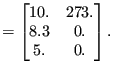
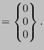

Next: Mechanical body loads Up: Reading the step input Previous: Concentrated loads Contents
The field architecture discussed here applies to loads on element faces and heat sources per unit of mass. Consequently, it is used for the following keyword cards:
It does not apply to gravity and centrifugal loads. These are treated separately.
The two-dimensional integer field nelemload contains two columns and as many rows as there are distributed loads. Its first column contains the element number the load applies to. Its second column is only used for forced convection in which case it contains the fluid node number the element exchanges heat with. The load label is stored in the one-dimensional field sideload (maximum 20 characters per label). The two-dimensional field xload contains two columns and again as many rows as there are distributed loads. For *DFLUX and *DLOAD the first column contains the nominal loading value, the second column is not used. For *FILM and *RADIATE loads the first column contains the nominal film coefficient and the emissivity, respectively, and the second column contains the sink temperature. For forced convection, cavity radiation and non uniform loads some of the above variables are calculated during the program execution and the predefined values in the input deck are not used. The nominal loading values can be changed by defining an amplitude. The number of the amplitude (in the order of the input deck) is stored in the one-dimensional field iamload. Based on the actual time the actual load is calculated from the nominal value and the amplitude, if any. It is stored in the one-dimensional field xloadact.
In the subroutine calinput.f, the distributed loads are ordered according to the element number they apply to. Accordingly, the first load definition in the input deck does not necessarily correspond to the first row in fields nelemload, xload, iamload, xloadact and sideload.
As an example, assume the following distributed loads:
*DLOAD 10,P3,8.3 *FILM 6,F4,273.,10. 12,F4FC,20,5.
then the loading fields will look like:
| nelemload xload | (778) |
| sideload iamload | (779) |